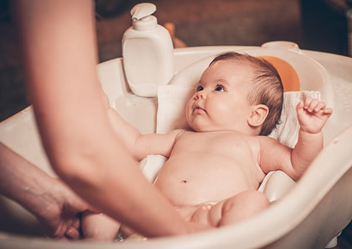
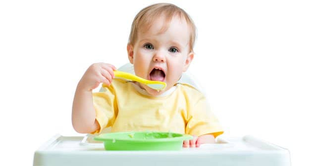

BEBEK BAKIMI
by Selin KEREN
İlk haftalarda emzirme düzensizdir ve bebek her istediğinde emzirilmelidir. Her iki göğsü de eşit sürelerde emzirtmek idealdir. Ancak bu her zaman gerçekleşmez. Bebek bir seferde tek göğsü emerse bir sonraki sefer diğer taraftan emzirmek gerekir. İlk 10 dakikadan sonra gelen süt daha yağlıdır; bebekte doygunluk hissi uyandırır. Bir göğsü emmesi bu nedenle yeterli olabilir. Günde yaklaşık 10-12 kere emmesi ve ilk 4-6 ay gece beslenmesi normaldir. Emzirilen bebeğe su vermek gerekmez. Meyve püresi ve pirinçli mama benzeri ek besinler 6 aydan sonra verilmelidir. Devamı için buraya tıklayın.
BEBEKLERDE EK GIDA SERÜVENİ
by Selin KEREN
Bebeğinizin ilk ayında dışkı sayısı fazladır (günde 6-8 kez). Anne sütüyle beslenen bebeklerin dışkıları cıvık olur. Dışkı ilk günler yeşilimsi, daha sonra altın sarısı renk alır. Mama ile beslenen bebeklerin dışkıları daha kıvamlı ve sıklığı daha azdır. Bu bebeklerde kabızlık da olabilir. Bebeğin günde en az 6-8 kez idrar yapması gerekir. Bu beslenmenin yeterli olduğunu gösterir. Bir iki ay sonra bebek 2-3 günde bir de dışkılayabilir, buda normaldir.Devamı için buraya tıklayın.
BEBEKLE GİDİLEBİLECEK PİKNİK ALANLARI
by Selin KEREN
Bebeğinizin altını sık değiştirin. Beslenme öncesi altı kirli ise veya bebek huzursuz ise bebeğinizin altını değiştirin. Beslenme ile barsak hareketleri artacaktır; bu nedenle beslenme sonrasında bebeğinizin altını değiştirmeniz gerekebilir. Bebeğin altını ıslak pamukla silebilir, çok kirli ise yıkayabilirsiniz. Hazır silme bezleri, yolculuklarınızda pratik olacaktır. Bebeğin cildi çok hassastır. Islak veya kirli bez uzun süre ( 3-4 saat ) kalırsa pişik olur. Bu durumda bebek cildine uygun pişik kremi uygulayabilirsiniz. Kız bebeklerin altları önden arkaya doğru temizlemek gerekir.Devamı için buraya tıklayın.